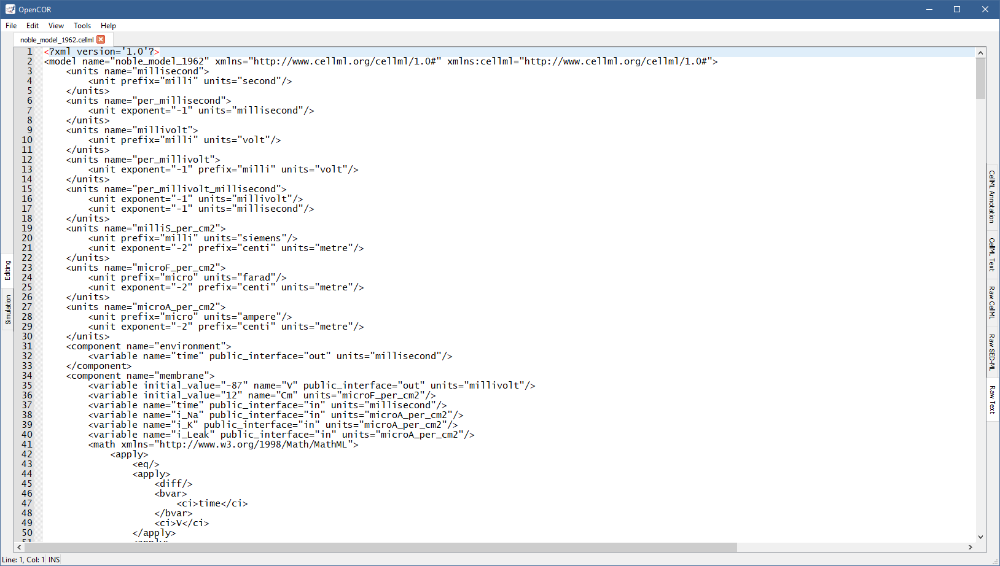

The RawTextView plugin can be used to edit text-based files. If you open a file, it will look something like:
The bluish line at the top is used to highlight the line that contains the caret, which line and column numbers can be found at the bottom left of the view, together with the current editing mode: INS (insert) or OVR (overwrite).
The size of the text can be increased and decreased by pressing Ctrl++ (or Ctrl+=) and Ctrl+-, respectively.
You can also change the size of the text by pressing Ctrl and moving the mouse wheel up or down.
To reset the font size, press Ctrl+0.
To change the size of the text will do so for all the files that use this view and will be remembered from one session to another.
Traditional editing features can be accessed through the Edit menu, various keyboard shortcuts and the context menu of the editor:
The find/replace feature can be activated by, for example, pressing Ctrl+F (and hidden by pressing ESC), as can be seen at the bottom of the view:
As soon as you enter some text in the Find field, the view will jump to the first occurrence of that text, as well as highlight all other instances.
You can then search for the next or previous occurrence of that text by pressing F3 (or Ctrl+G, depending on your operating system) and Shift+F3 (or Ctrl+Shift+G), respectively.
You can make the search case sensitive, look for whole words only and/or use a regular expression by selecting the requested option(s) from the drop-down menu to the left of the Find field:
To replace some text, you can use the Replace with field.
From there, use one of the Replace, Replace & Find and Replace All buttons at the bottom right of the view.